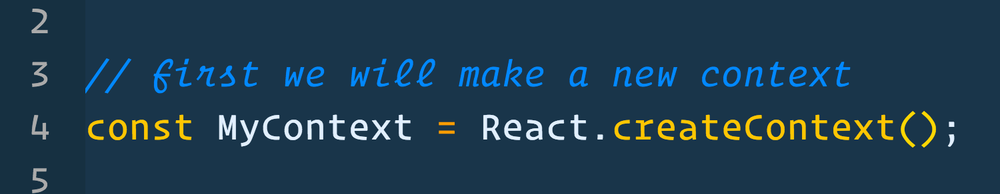
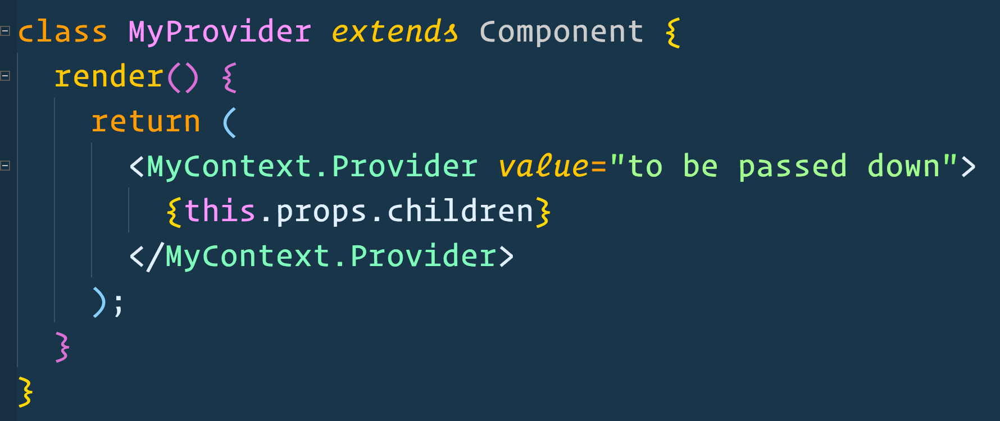
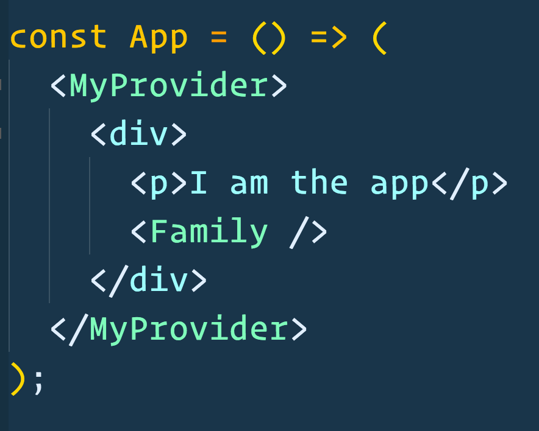
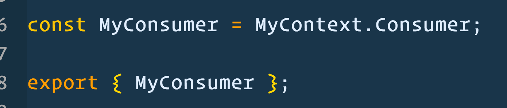
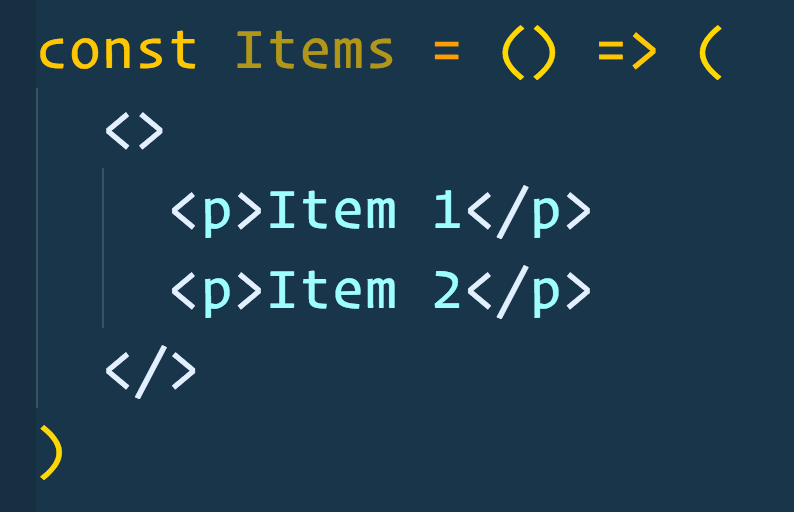
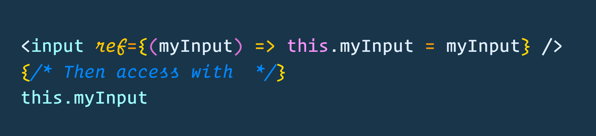
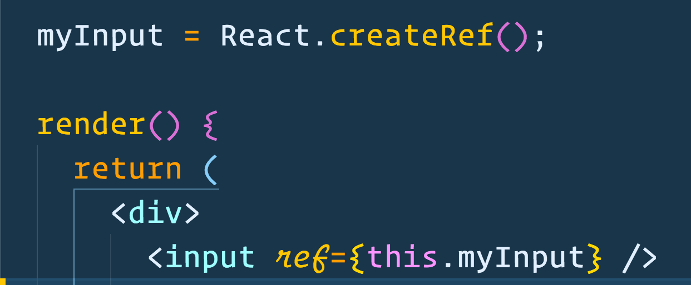
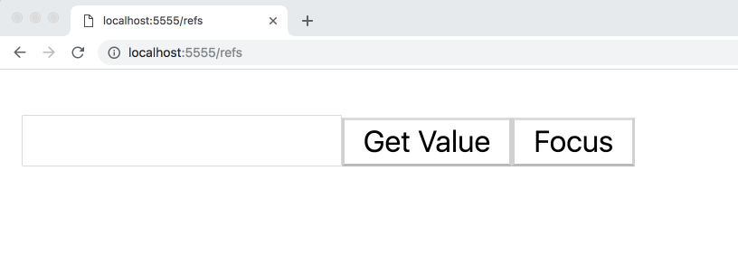
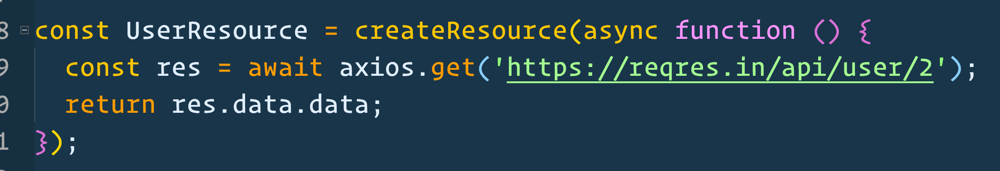

What's Newish
Hi, I'm Wes Bos

These slides will be available shortly after this talk
I'll tweet the link out.
@wesbos
I make Web Development Courses
 ES6.io
ES6.io ReactForBeginners.com
ReactForBeginners.com LearnNode.com
LearnNode.com JavaScript30.com
JavaScript30.com CSSGrid.io
CSSGrid.io Syntax.fm
Syntax.fmThis talk is about what is new in React
Everything you know will be useless in 2 months
JUST JOSHIN' YA
RELAX FOLKS
Most of these things address current React pains, or help us develop better in edgecases
Context
Fragments
Error Boundaries
New Refs API
Portals
Suspense
Hooks
READY?!
this.letsDoIt()
Context
Fragments
Error Boundaries
New Refs API
Portals
Suspense
Hooks
Context
New API, Officially Supported
React Context Allows you to pass data down multiple levels without the need to pass though props at each level

Prop Drilling
Passing Data via props is by design in React, but can be cumbersome in some applications
Context allows us to define state, and state updaters at the top of our application and then inject it at any level deep.
Here is how it works
Two Parts: Provider and Consumer
Provider
Where the data lives
Consumer
How to access the data
Let's Code It!
First we make a Context
Then We create a provider
The value prop can pass any type of data down, including state and functions
Now we need to put the provider into our application
Can go anywhere, as long as it's higher in the component tree than anything that needs it
This usually means wrapping your application with it
Once the Provider is in your application, your context values are "in the air"
Now, the Consumer
Remember MyContext from earlier?
Make a consumer variable.
you'll probably want to export it tooNow Anywhere you need your data, just use your consumer component.
The child of your consumer is a (render prop) function that passes you the context values.
Pretty Sweet!
Should we context everything?
Not quite, some notes...
Prop Drilling isn't bad
React is intentionally self-contained
Only use context if the complexity is worth it
It's Less Self Contained
Your components rely on outside data
Sometimes Prop Drilling is just a result of bad design
Very Handy in medium sized applications
Passing State too cumbersome, state manager unnecessary
Context
Fragments
Error Boundaries
New Refs API
Portals
Suspense
Hooks
Fragments let us return multiple elements from a component
The Problem
Extra Divs Suck
Goofs with Grid, Flexbox, Direct Descendant Selectors
Enter Fragments
I like to call them Ghost Elements
As of Babel 7
Context
Fragments
Error Boundaries
New Refs API
Portals
Suspense
Hooks
Error Boundaries
Catch Errors throw in child components
Catches Errors in render() and lifecycle hooks
The point of error boundaries is to be able to display something to the user when things break
Doesn't Catch:
- Event handlers
- render doesn't depend on them
- can be caught with try/catch or .catch()
- Errors thrown in the error boundary
Why is this special?
What about try/catch?
render is declarative
<FamilyMembers/>
Not Imperative
try { ShowFamilyMembers() } catch (err) { ... }
Context
Fragments
Error Boundaries
New Refs API
Portals
Suspense
Hooks
Refs!
What are they good for?
Refs
An escape hatch for accessing DOM elements
Getting access to a ref is helpful for:
- Performing DOM api methods
- Integrating 3rd party libraries which don't have a react library (maps, charts, legacy jQuery UI)
- Animations
Back in the day
New Refs API
Once you have a ref, you have access to the DOM element and can call methods on it
Warning: Not very exciting
Use with Care
You probably don't want a ref
Mirror Values to state for inputs
<input
onChange={(e) => this.setState({ [e.target.name]: e.target.value })} />
Access elements in events with e.target
Porttals
Context
Fragments
Error Boundaries
New Refs API
Portals
Suspense
Hooks
Not Every Website is built 100% in React
Could be server rendered CMS
Drupal, WordPress, Static, Legacy...
React is often used for components on a website
How do you React outside of your react root?
(it's portals...)
Here is how it works
Context
Fragments
Error Boundaries
New Refs API
Portals
Suspense
Hooks
Suspense
Coming To React Soon
Very Much under development
It will change
React suspense is all about waiting for things to load before render
Code split bundles
-Data fetching
-Images Sources
React suspense is a way to suspend or pauserendering of a component while waiting for async data to load
Why is is special?
Let's look at how we currently do it
This works okay, but...
The Loader UI and the data fetching always have to live in the same component
React Suspense will decouple where you
wait for data
&
where you show Loading UI
A React Suspense Placeholder component will be able to detect if any of it's child tree components are loading data
A React Suspense Placeholder component will also be able to avoid showing Loaders earlier than necessary on fast connections
SHOW ME THE CODE
This might change!
1. Create a Cache
2. Create a Resource from your async functions
3. Read that data before render

const user = UserResource.read(cache);
This will block this render() function - only that one render - until the data is resolved
UserResource.preload(cache);
Can be called at any time to async preload content.
NextUserResource.preload(cache);
Preload next user before navigation
Where is the loading state?!?!
Remember we said we can decouple loading states?
Enter
<Suspense>
4. Wrap any components(s) with resources with a <Suspense>
Then...
5. Provide a maxDuration and fallback prop
The maxDuration prop determines how long to show nothing
The fallback prop is a component UI to show if render is still suspended past maxDuration
Some Important Notes
A Placeholder can be placed anywhere you want the Loading UI to show.
A Placeholder can have many children that contain resources - it will wait for all of them.
Demo
react-fiber-experiments by Christophe RosseContext
Fragments
Error Boundaries
New Refs API
Portals
Suspense
Hooks
Hooks
🎣
Hooks are a new way to write State and other react features without writing classes.
The Current "Problem"
Oh I need state!
Better convert to a class!
Oh and lifecycle methods!
Oh and some other stuff too
Enter Hooks
Works with Context too
useEffect
Lifecycle Methods + Side Effects
Custom Hooks
That's it!
React is Evolving
but..
Most of these are additions, not changes
They make our applications better!
Hope you learned a thing or two. Thanks!
I have stickers!